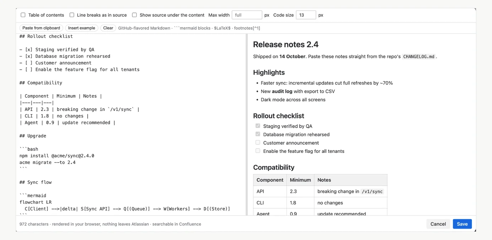
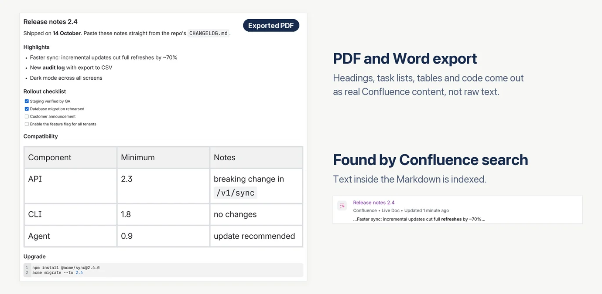

Guide · Confluence Cloud
How to write and paste Markdown in Confluence Cloud
Many teams write in Markdown: READMEs, changelogs, notes from an editor or an AI assistant. Confluence Cloud understands a few Markdown shortcuts while you type, but it converts them into regular Confluence formatting and does not keep the Markdown. This guide shows how to keep Markdown as Markdown on a Confluence page, without losing search or exports.
What Confluence does on its own
The Confluence editor recognizes some Markdown as you type, for example # followed by a space for a heading, or three backticks for a code block. That is handy for formatting, but the result is ordinary Confluence content: the Markdown source is gone, so you cannot paste a whole README, edit it as Markdown later, or keep it in sync with a copy in your repository.
When you want the Markdown itself on the page
- Release notes copied from a
CHANGELOG.md. - A README or design note that also lives in Git.
- Text produced by tools that output Markdown, with tables, task lists and code.
- Engineers who simply prefer writing Markdown.
Step by step with Markdown Live Editor for Confluence
- A Confluence administrator installs Markdown Live Editor for Confluence from the Atlassian Marketplace. It is free for up to 10 users.
- Edit a page, type
/markdownand choose Markdown. - Paste or write Markdown on the left. The rendered result appears on the right as you type: GitHub-flavored Markdown with tables, task lists, footnotes, highlighted code, Mermaid diagrams and LaTeX math.
- Optionally add a table of contents, then Save. To change it later, select the macro and edit the Markdown again.

Search and exports still work
Two things usually break when content lives inside a macro, and both are handled:
- Search: the Markdown is added to the Confluence search index, so searching for a phrase that only exists inside it finds the page.
- PDF and Word exports: headings, lists, task lists, tables, quotes and code come out as real Confluence content, not raw text.

Questions
Can I show images from the web?
Images referenced by URL are shown as links that open the image in a new tab. Loading external images would mean sending requests outside Atlassian, and the app is built to keep everything inside your site (it qualifies for Runs on Atlassian).
Is raw HTML supported?
No. HTML tags are shown as text, which keeps pages safe when you paste content from elsewhere.
Can I draw diagrams?
Yes, with a ```mermaid code block. For pages that are mostly diagrams, see how to add Mermaid diagrams to Confluence Cloud pages.